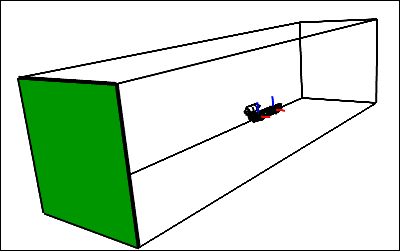

Flow Over a CO2 Dragster
Simulate an incompressible, steady-state, turbulent flow over a CO2 dragster with rotating wheels and a moving ground plane. View velocity vectors and velocity magnitude color maps, and monitor lift and drag forces.
Read Me
This tutorial is classed as advanced and you should consider completing other simpler RANS Flow tutorials as a prerequisite, such as "Incompressible Flow Through a Pipe into a Box".
Note if you are attempting to use your own geometry for this tutorial then you need to construct a single, watertight flow volume that represents the air around your car. In CAD terms that means the solid will represent the air around your car. You will need to subtract the car (as a solid) and all its related components (e.g., wheels) from a large outer bounding box. For efficiency you can model a half flow volume due to symmetry as in this tutorial.
Goals
In this tutorial, you will learn how to:
- Specify fluid conditions on a single volume for an incompressible, steady-state, turbulent flow simulation
- Specify boundary conditions on faces
- Use a linear velocity condition to simulate a moving ground plane
- Use an angular velocity condition to simulate multiple rotating wheels
- Specify meshing parameters
- Generate a velocity magnitude color map
- Generate velocity vectors
- Create a lift and drag force monitor
- Monitor residuals to determine flow simulation convergence
Assumptions
- You have activated the Caedium RANS Flow add-on, or Caedium Professional.
- You are familiar with Caedium essentials.
- You have downloaded the co2dragster.sym project file.
Read the Simulation File into Caedium
In the Home Toolbar click the Open button  . Navigate to the location of the co2dragster.sym file. Double-click on co2dragster.sym to load it into Caedium.
. Navigate to the location of the co2dragster.sym file. Double-click on co2dragster.sym to load it into Caedium.
The project within Caedium should appear as shown below.
Prepare the Volume
To shade the geometry faces, right-click on the View Window (view) background, double-click sim->Faces, and select Properties from the menu. In the Properties Panel, turn off the Transparent property to make all faces visible (shaded).
Shading the faces in the simulation will make it easier to select them when you configure fluid and boundary conditions.
Specify the Substance Settings
Specify the Fluid Conditions
Select the Physics Tool Palette. Select Gases->Air. The Properties Panel will show the default properties for air. To enable incompressible turbulent (viscous) flow, the State->Rotational and State->Viscous properties should be set to Yes (their default values), and the State->Compressible, State->Heat Transfer, State->Species, and State->Transient properties should to be set to No (their default values).

Drag and drop the Air tool onto a face of the volume. Select Done to set air as the fluid inside the volume.
Set the Reference Velocity for the Simulation
The reference velocity can be used to initialize the simulation and to specify the inlet velocity. In this tutorial you will set a reference velocity of 22.2 m/s (50 mph) in the negative X-direction.
With the volume already selected from the previous step, the Properties Panel will show the Substance: Air properties by default. Set Substance: Air->Properties->Phase: Single->Reference->U: Fixed Value->Value to be [-22.2 0 0] and press Enter on the keyboard.
Set the Relaxation Factors for the Simulation
Changing the default omega relaxation factor in this example will help the simulation to converge more quickly. See "Relaxation Factors in RANS Flow Solvers" for tips on setting relaxation factors.
In the Properties Panel, expand the Substance: Air->Solver: RANS Flow->Relaxation Factors property, and set omega to be 0.1.
Set the Turbulent Length Scale
The turbulent length scale is used to determine the turbulent dissipation rate, i.e., how fast turbulence decays. In this tutorial you will set the length scale to be approximately a quarter of the length of the dragster.
In the Properties Panel, set Substance: Air->Properties->Phase: Single->Reference->omega: Turbulent Length Scale->Length Scale to be 0.04 and press Enter on the keyboard.
Specify the Boundary Conditions
Wall Conditions
Drag and drop the Faces->Wall tool onto a face of the volume. Double-click flow-volume->Faces in the Select dialog and select Done to create walls on the outer surfaces of the volume.
A wall is a solid surface through which fluid cannot flow.
Symmetry Local Condition
To create a symmetry condition, drag and drop the Faces->Symmetry Local tool onto the symmetry face shown below (you will need to zoom out to see this face). Double-click the first face in the Select dialog and select Done.
The Symmetry Local tool can be applied to any planar face. The Symmetry tool applies to the entire simulation and is useful for visualization.
Slip Conditions
To create the 2 slip conditions, drag and drop the Faces->Slip tool onto one of the faces shown below. Double-click the first face in the Select dialog, select Select/Deselect and right-click on the second face (shown below). Double-click the first face in the Select dialog. With the 2 faces selected, select Done.
The Slip condition is similar to the Symmetry Local condition except that it constrains the velocity to be parallel (tangential) to a face.
Inlet Conditions
An inlet is a boundary condition that specifies the properties of the fluid as it enters the flow volume.
Main Inlet
To create the main inlet, drag and drop the Faces->Inlet tool onto the face shown below. Select that face in the Select dialog, click OK, and select Done to create the inlet.
Inlet at the Nozzle
To make it easier to select the nozzle, select the outer boundary face opposite the dragster symmetry plane and make it transparent.
To create the inlet at the nozzle, drag and drop the Faces->Inlet tool onto the face (nozzle) shown below in green. Select nozzle in the Select dialog, click OK, and select Done to create the inlet.
In the Properties Panel, set Physics: Inlet->Type: Default->U to be Surface Normal and set the associated Speed to 154. Then set Physics: Inlet->Type: Default->omega to be Turbulent Length Scale and set the associated Length Scale to 0.004 (the nozzle diameter).
Outlet Condition
To create an outlet, drag and drop the Faces->Outlet tool onto the face shown below in green. Double-click that face in the Select dialog, and select Done to create the outlet.

An outlet is a boundary condition that specifies the properties of the fluid as it leaves the flow volume.
Linear Velocity Condition to Simulate the Moving Ground Plane
Select the Faces->Linear Velocity tool. In the Properties Panel, set Velocity to [-22.2 0 0].
Drag and drop the Linear Velocity tool onto the ground face as shown below. Double-click that face in the Select dialog, and select Done to create the linear velocity condition.
Setting the linear velocity on the ground face will simulate a moving ground plane. A linear velocity can be assigned to walls and inlets.
Angular Velocity Condition for the Rotating Wheels
For an angular velocity condition, you need to specify the axis of rotation if the rotation is not around the origin. In this tutorial you will set the rotation axis at the center of each wheel.
Angular velocity (omega) = V / r, where V is the tangential velocity and r is the radius. In this tutorial, to match the moving ground plane, omega = 22.2 / 0.013 = 1707 radians/s = 97804 degrees/s.
In this tutorial the front and back of each wheel has a stationary hubcap. Only the wheel tread and a thin section of the wheel wall rotate.
Select the Faces->Angular Velocity tool. In the Properties Panel, set the Velocity to [0 0 -97804].
Drag and drop the Angular Velocity tool onto the axes associated with the rear wheel in the View Window, double-click axes in the Select dialog, and select Set Axes. Right-click on a face on the wheel tread, double-click the rear-wheel group in the Select dialog, and select Done.
Repeat the same process to apply the Faces->Angular Velocity tool to the front wheel, where the axes will be axes_1, and the group will be front-wheel.
Setting the angular velocity on the wheels will simulate rotating wheels. An angular velocity can be assigned to walls and inlets.
Specify Meshing Parameters
The accuracy property controls the mesh element size and growth rate on and around the entities associated with each accuracy property.
Set Accuracy for the Wheel Contact Patches
Select the Special->Accuracy tool. In the Properties Panel set Accuracy to Custom, and set Resolution to 10.
To make it easier to select the edge group in the next operation, make the ground transparent as shown below.
Drag and drop the Accuracy tool onto the edge that connects the ground to the outboard thin wall of the rear wheel (shortest edge of the wheel contact patch - edge_370 - shown in bold in the diagram above). Double-click the contact-patch-outer-edges group in the Select dialog, and select Done to set the accuracy for the group that includes edges for both the rear and front wheel contact patches.
Turn off the transparency property for the ground.
Set Accuracy for the Nozzle
Select the Special->Accuracy tool. In the Properties Panel set Accuracy: Custom->Growth Rate to 1.15.
Drag and drop the Accuracy tool onto the nozzle, select nozzle in the Select dialog, click OK, and select Done to set the accuracy.
Set the Accuracy for the CO2 Housing Nose
Select the Special->Accuracy tool. In the Properties Panel set Accuracy: Custom->Growth Rate to 1.1.
Drag and drop the Accuracy tool onto the CO2 housing nose, select nose in the Select dialog, click OK, and select Done to set the accuracy.
Set the Accuracy for the Dragster Wing Tip
Select the Special->Accuracy tool. In the Properties Panel set Accuracy: Custom->Growth Rate to 1.2 and set Resolution to 25.
Drag and drop the Accuracy tool onto the wing tip (shown below), select face_361 in the Select dialog, click OK, and select Done to set the accuracy.
Create a Group of Dragster Faces
It is useful to have a group consisting of all the dragster faces for results presentations, such as lift and drag monitors.
Given the numerous faces constituting the dragster, it is easier to use subtractive selection, i.e., select all faces and then deselect the faces that are not part of the dragster.
Right-click on a face on the flow volume, double-click flow-volume->Faces in the Select dialog, and select Select/Deselect. Now use right-click, the Select dialog, and Select/Deselect to remove the 6 large outer bounding faces from the current selection. Also remove the nozzle face. After deselecting the last face, select Group, and then Properties.
In the Properties Panel, select the Group tab  and set the Name to dragster.
and set the Name to dragster.
Display Initial Velocity Color Map
Select the Results Tool Palette.
Drag and drop the Vector Fields->U (velocity) tool into the View Window (view) background, double-click sim->Faces, and select Color Map to create contours of velocity magnitude.
The request for the velocity color map will cause the entire volume to be meshed which will take a few minutes and creates about 670,000 cells. Only a single color (blue) is shown, because the initial velocity magnitude values at each element on the faces are the same.
Remove the Color Map: U:Mag from the large outer boundary face opposite the dragster symmetry plane to more clearly see the mesh details around the dragster. Right-click the face (face_3), double-click face_3 in the Select dialog and then select Properties from the menu. In the Properties Panel select (left-click) the Color Map: U:Mag property, then right-click and select Delete from the menu.
Right-click on the View Window (view) background, double-click sim->Faces, and select Properties from the menu. In the Properties Panel turn on the Transparent property in the Properties Panel to see the face mesh elements (triangles).
In the Home Toolbar click the Undo button  once to return the faces back to their previous state.
once to return the faces back to their previous state.
To present smooth shaded results set Style to Smooth for the current multiple face selection.
To better see the velocity magnitude range around the dragster you need to modify the color map range. In the View Legend, left-click on the title Color Map, then in the Properties Panel set the Range to Manual. Expand the Range: Manual property and set Bounds to [0 25].
Display Initial Velocity Vectors
To display velocity vectors as the simulation updates, drag and drop the Vector Fields->U tool onto the dragster symmetry plane. Double-click the first face (face_356) in the Select dialog and select Select/Deselect. Right-click the ground (face_1), double-click the first face in the Select dialog and select Arrows to create arrows colored by velocity magnitude.
In the View Legend, left-click on the title Arrows  , then in the Properties Panel set Scale to 0.1.
, then in the Properties Panel set Scale to 0.1.
Create Force Monitors
In this step you will set up lift and drag monitors for the dragster on the same monitor plot.
Drag Monitor
Drag is the force parallel to the flow direction, created by the air moving over the dragster. In this case, drag is represented by the negative X-direction (default) of the F (force) vector variable.
Drag and drop the Vector Variables->F (force) tool onto a face of the dragster. Double-click the dragster group in the Select dialog and select Monitor.
Drag and drop the F Monitor tab over to the right-hand edge of the Caedium application window to split the window into two parts as shown below.
Left-click dragster in the F Monitor Legend, left-click again to edit the title, and change it to Drag. In the Properties Panel, set the Symbol to None.
Lift Monitor
Lift is the force perpendicular to the flow direction, created by the air moving over the dragster. In this case, lift is represented by the Y-direction of the F (force) vector variable.
To monitor lift and drag on the same plot, first you will create another series (plot curve) for the dragster on the original drag monitor, and then you will set this plot series to monitor lift.
In the View Window (view) right-click on a face of the dragster, double-click the dragster group in the Select dialog, and select Copy. Left-click in the Monitor Window (F Monitor) to give it focus, then right-click and select Paste.
Left-click dragster in the F Monitor Legend, left-click again to edit the title, and change it to Lift. In the Properties Panel, set the Symbol to None.
In the Results Tool Palette, select the Vector Variables->F tool. In the Properties Panel set Scalar to Y.
Drag and drop the Vector Variables->F (force) tool onto Lift in the F Monitor Legend, and select Y Axis.
Left-click in the Monitor Window (F Monitor), then in the Properties Panel rename the Y Axis to Force.
Create Residuals Monitor
Left-click in the View Window to give it focus. Drag and drop the Special->Residuals tool onto a face of the dragster. Double-click flow-volume in the Select dialog and select Monitor to create the residuals monitor.
Drag and drop the Residuals tab over to the right-hand edge of the Caedium application window to split the window into three parts as shown below.
Run the Flow Solver
The number of flow (simulation) solver iterations is determined by multiplying the number of simulation time-steps (default = 5) by the number of iterations per simulation time-step (default = 100). The number of simulation time-steps is determined by dividing the simulation duration (default = 5 s) by the simulation time-step (default = 1 s). After each simulation time-step (equivalent to 100 iterations by default) the results will be refreshed. For this simulation the defaults are fine and will result in a total of 500 iterations.
In the Home Toolbar click the Run button  to run the flow solver.
to run the flow solver.
If you wanted to interrupt the flow solver, you would re-click the Run button; the solver would then stop at the end of the current simulation time-step.
Let the solver complete its run. Note the updates of the velocity vectors, velocity color map, the forces monitor, and the residuals monitor as the simulation progresses.
Simulation Failures
If you have problems with simulation failures try reducing the Accuracy->Resolution property from 10 to 8 on the wheel contact patches - sometimes a little tweak to the mesh can make the difference between the simulation failing and succeeding. Make sure you are at the Start (click the Start button) of time and that you change the Resolution property for the entire group in one step.
The contact patches are particularly sensitive to mesh resolution due to the shallow angle they make with the tire, which can lead to poor element quality.
Feedback
Questions? Ideas? Problems?

Comments
Solver fails
I run into a problem everytime that I try to run the solver at the end of this tutorial as it gives me this error everytime.
Time = 0
Create mesh
Processor 0: field transfer
Processor 1: field transfer
Processor 2: field transfer
Processor 3: field transfer
Processor 4: field transfer
Processor 5: field transfer
Processor 6: field transfer
End.
Warning:
RANS Flow failed
Unexpected process exit.
The system cannot find the path specified.
I have tried downloading one of the example .sym files from the Basilisk Performance team to see if that fixed the problem but it gives me the same error. I am thinking that it could be something with my pc, it is a hp laptop with an i7 720QM cpu 8gb RAM and hd5650 1gb graphics card.
Missing MS-MPI Maybe?
Some ideas:
You could be missing MS-MPI.
When you installed Caedium did you check the Microsoft MPI option?
For more details see "What is the Windows installation process?".
Did you change any of the preferences under File->Preferences, Physics->OpenFOAM?
You can try running without parallel and see if it helps by selecting the menu File->Preferences, in the Properties Panel set Physics->OpenFOAM->Parallel:Shared Memory->Processes to 1.
Check MPI Preference
Another thought is to check the MPI preference, select File->Preferences, in the Properties Panel check the Application->MPI preference points to your MS-MPI executable, the default is
C:\Program Files\Microsoft HPC Pack 2008 R2\Bin\mpiexecThanks for that it fixed that
Thanks for that it fixed that problem but now when i run the simulation it starts running the volume solver and then at iteration 20 it fails and gives me this error code.
Warning:
RANS Flow failed
Solver singularity: smoothSolver: Solving for k, Initial residual = 0.157126, Final residual = 1.#QNAN, No Iterations 100
I am unsure of why this is happening I have uploaded the .sym file to my dropbox so that you can download it if thats any help to you. Here is the link: http://db.tt/8yLetfy
Missing Symmetry, Inlet, and Outlet
It appears that you haven't set the outer boundary symmetry, inlet and outlet conditions, please review the following tutorial sections:
Sorry I did the inlet, outlet
Sorry I did the inlet, outlet and symmetry local conditions and i still get this error:
Warning:
RANS Flow failed
Solver singularity: smoothSolver: Solving for k, Initial residual = 0.0293444, Final residual = 1.#QNAN, No Iterations 100
You can download the updated file from http://db.tt/8yLetfy
Thanks for your help so far.
Missing Nozzle Turbulent Length Scale
You have missed setting the Physics: Inlet->Type: Default->omega = Turbulent Length Scale and the associated Length = 0.004. Review the section "Inlet at the Nozzle".
If this doesn't help then try forcing a re-mesh by deleting a face and then undo.
Thanks that fixed it
Thanks that fixed it and it ran fine till it finished. My problem now is that I have ran about 10 different designs through and only about 4 of them working fine with the others failing and giving me a rans flow failed error and the residuals monitor is really erratic.
Post follow ons in the Question Forum
Good news it's now working. Let's take the follow on discussion to the Question Forum.
Incorrect Results
Hi,
I tried to attempt this tutorial using a car that our F1 team had designed and when I ran the solver the faces turned out to be orange with a few shaded specks. I tried the tutorial multiple times to see if I had missed anything, but it happened every time.
Here is an example:
http://dl.dropbox.com/u/19533746/PinnacleX2.png
Please help!
Thanks,
Hamzah
Likely Mesh Problems
I would guess there are problems with your mesh. For tips on meshing try the comment "Mesh Diagnostics."
For a question thread dedicated to F1 in Schools try "Caedium Pro Issues."
If you have more questions then I suggest starting a new thread in the Questions forum.
F1 in Schools Project
We are a F1 in schools team, we are having trouble to intially set up the car in a flow volume and create a subtract the part from the box. Everytime we try to subtract the volumes it says:
Error:
Create Subtract Geometry failed.
Open Cascade failure: TopoDS_Buider::Add
If there is any link on how to setup the car or a tutorial on how to analyse F1 cars for schools please comment
Thanks
Prepare your geometry in your CAD system
Some tips:
Given a good STEP flow volume you can then follow this tutorial to setup up your simulation.
Complex Terrain
Hey, I have been following the tutorials on this website with great results. However, I am looking to get a bit more out of the software. Specifically, I am trying to model wind flow over terrain (.stl file I have) however, I am not sure how to create the walls, inlet, outlet, etc. This tutorial has all the necessary steps I need to perform once my domain has been created.
Could anyone point me in the right direction?
Post in Symscape Question Forum
Please post your question as a new thread in our Question Forum, as this comment is unrelated to this tutorial.
How do I find the exact
How do I find the exact numerical values for the Drag and Lift forces? It is hard to differentiate between models by looking at the graph.
Thanks.
Export via CSV
Export the plot series as CSV (Comma Separated Values)